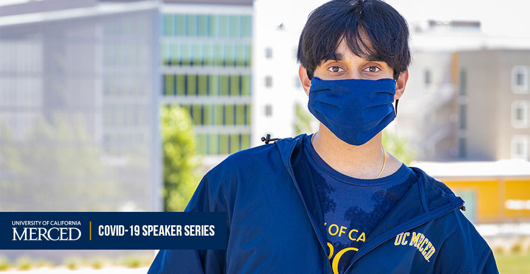

Public Conference Presents COVID-19
From Different Angles
September 16, 2020
By Lorena Anderson, UC Merced
Everyone will have opportunities to learn about collaborative research at the intersections of COVID-19 and topics related to the environment, health and equity through a series of online conference sessions this fall.
Department of Civil and Environmental Engineering Professor Colleen Naughton and colleagues at the University of South Florida and the Association of Environmental Engineering and Science Professors (AEESP) earned a National Science Foundation grant to host the conference, which will feature presentations and discussions by experts along six themes: systemic racism and environmental engineering education; creating efficient and healthy cities; supplying sustainable food, water and energy; informed decisions and actions; climate change mitigation and adaptation; and designing a future without pollution and waste.
The sessions are related to the Grand Challenges in Environmental Engineering, and people who want to participate for professional development will be able to take short quizzes to earn certificates of completion.
Weekly synchronous and asynchronous virtual sessions will be held from Oct. 16 through Nov. 20 and are open to all.
“People seem to be more engaged in science right now,” Naughton said.
Naughton, who researches water, sanitation and hygiene in developing communities, among other topics, said her work on this conference — in the informed decisions and action theme — builds on a grant she recently received from the Center for Information Technology Research in the Interest of Society (CITRIS) to study wastewater and SARS-CoV-2.
She is working with UC Davis colleagues to research and map the risk of SARS-CoV-2 among people who work at wastewater treatment plants.
“They are essential workers, and can be exposed, because viruses can aerosolize and there are certain steps in wastewater treatment that require aeration of the effluent,” Naughton explained.
To learn more about the conference, the panelists and other details, follow the conference’s social media posts on Facebook and Twitter (@AEESProfs). Attendees can submit questions for the expert presenters using #AEESPConvergingCOVID19.